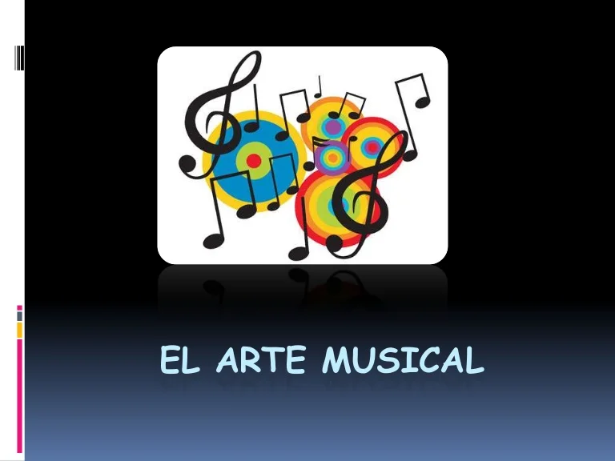

El artista es la persona que crea o produce obras de arte. Pueden coincidir en el mismo sujeto las capacidades del autor y artista, por supuesto. Persona que estimula, que ve para arriba y se inspira en la luna, gente que sabe de cultura, que saben encontrar el destello en su locura.
Cualquier persona física que crea una obra musical original, con independencia de la técnica y/o proceso utilizado para su creación. En la categoría de artista autor se incluye al artista intérprete o ejecutante que, por medio de su actuación, incorpora elementos suficientes de originalidad en la obra que interpreta
Para obtener una mayor precisión en la definición del concepto, se han combinado varias de las definiciones anteriores y se han añadido otros datos relacionados con la materia en cuestión.